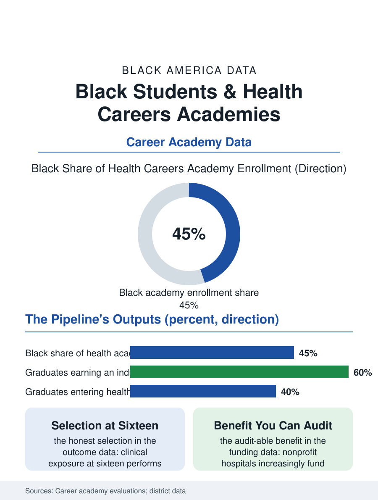

Black Education
The Hospital as Campus: Health Careers Academies
The hospital becomes a campus, the graduate leaves certified, and the system grows its own workforce from the neighborhood's sixteen-year-olds. The health academy file.

The health careers academy, the high school pathway built around the hospital and the health professions, is the education file's most direct answer to the health workforce's composition: its students, disproportionately Black in the hospital cities that host the model, graduate with certifications, clinical exposure, and a map of the health professions' ladder whose first rungs they have already stood on. This article reads the health academy file.
The Hospital as a Campus
The model's structure converts the health system's scale into curriculum: the partner hospital or health system supplies the clinical rotations, the professional mentors, and the certification pathways, the CNA and phlebotomy and medical assisting credentials of the employment files, earnable inside the high school program so that the graduate's first health job is a placement rather than an application. The enrollment data show the model's draw: the academies' applicant pools in the urban districts run heavily Black and female, the health professions' visibility in the community, the hospital being the neighborhood's largest employer and its most familiar professional workplace, making the pathway legible to families in the way the aviation file's runway is, with the difference that the health ladder's every rung, aide to technician to nurse to practitioner, is a known neighbor's actual biography. The academic core is the model's design claim: the science sequence taught through the clinical lens, the anatomy course in the hospital's cadaver-adjacent facilities, the statistics course on the system's own quality data, posting engagement results in the program evaluations that the career academy literature generalizes, the contextual curriculum holding the students the abstract sequence loses. The mental health and community health tracks are the model's newest branches in the program data, the academies adding the behavioral health technician and the community health worker certifications to the clinical stack as the health system's own workforce plans identify those tiers as its fastest-growing need, so that the ladder the academy builds keeps adding the rungs the system's hiring actually requests, which is the partnership's discipline working as designed.
Certifications and the First Rung
The credential stack is the file's measurable output: the academy's graduates leave with the industry certifications that the traditional graduate buys afterward, plus the clinical hours the health programs' admissions count, so that the nursing and allied health pipelines above the academy receive its graduates with a head start the admissions data can price. The employment outcomes in the partner systems' records show the intended circuit closing: the hospital hires its own academy's graduates into the entry tier at rates that make the academy a workforce pipeline in the literal sense, the system's human resources department being the program's co-designer, a relationship whose comfort and whose capture the evaluators both note, the student trained for one employer being the model's strength as a pipeline and its limit as an education, answered in the curriculum's design by the portable credentials and the college core. The college matriculation data complete the ladder's picture: the academies' graduates enter the health degree programs, nursing above all, at rates the districts publish with pride, and their completion in those programs, tracked in the strongest evaluations, runs ahead of the same districts' baseline, the clinical exposure having performed the sorting honestly at sixteen rather than expensively at twenty.
The System Grows Its Own
The health academy file closes with the model's convergence with the teacher file's: the hospital, like the district, has learned to grow its own, the workforce's diversity and durability both being served by the rooted recruit, and the health system's community benefit obligations, the nonprofit hospital's tax exemption price, increasingly fund the academy as their most legible discharge, education being the benefit the community can audit. The model's spread follows the hospital map, the system's regional campuses replicating the partnership in their districts, and the rural version, the telehealth-linked academy serving the hospital desert's counties, is the design frontier in the current program literature. The data systems count the certifications and the hires. The file's last entry is the rotation's first morning: the sixteen-year-old in the scrubs the system issued, badged with her own name, standing where her grandmother the patient stood, on the other side of the counter now, which is the ladder's whole argument made visible in one corridor, and the workforce files above this one are where she is going.
More in Black Education
Black Educational Attainment: High School Parity, the College Gap
About 89 percent of Black adults hold a high school diploma and one in four holds a bachelor's degree or higher — the attainment ladder, the college completion gap, and the generational trend.
Historically Black Colleges and Universities: Enrollment and Degrees
More than 100 HBCUs enroll roughly 290,000 students and award about one in six Black bachelor's degrees — an outsized share from a small sector. The federal education data.
Black College Enrollment: 2.4 Million Students
About 2.4 million Black students are enrolled in American colleges — nearly two-thirds of them women. The NCES enrollment data by sector, level, and trend.
Source: National Career Academy Coalition and MDRC career academy evaluations; partner health system workforce reports.